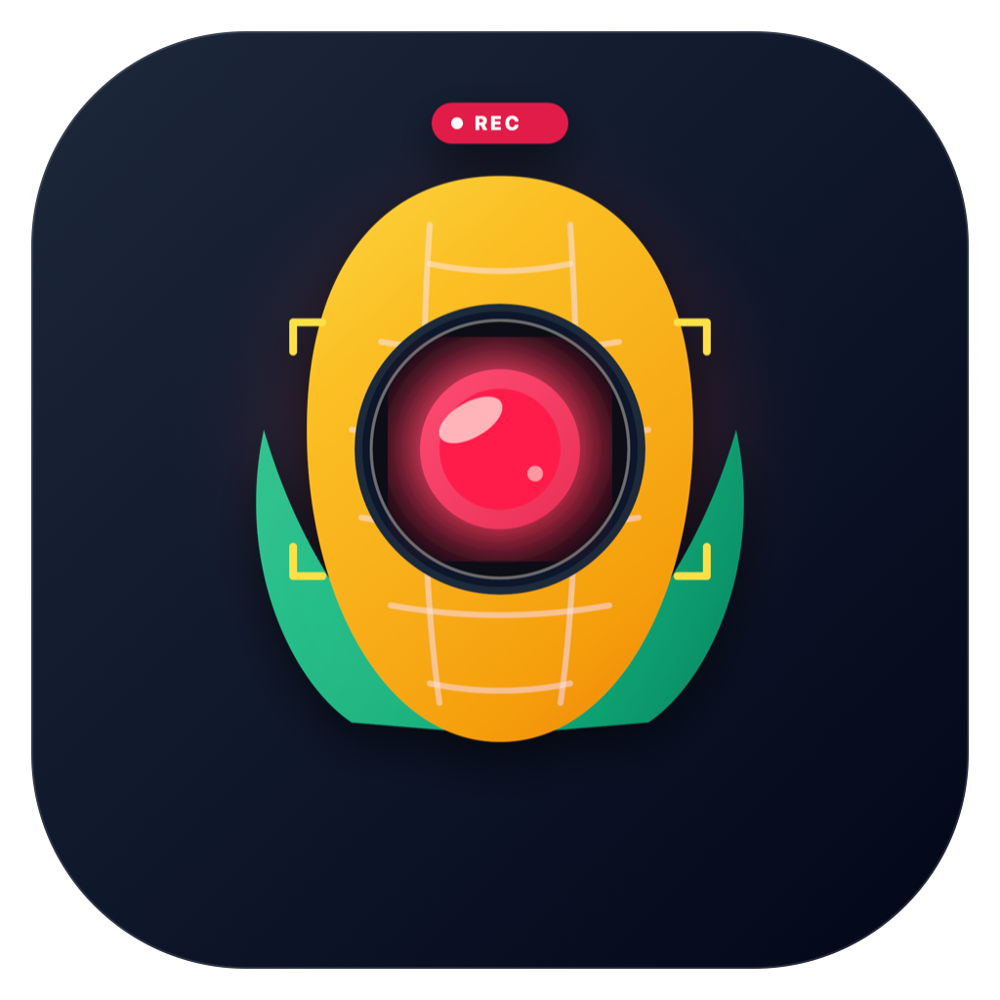

Ekranlar qidirilmoqda...
Smart Auto-Zoom
Kursor to'xtagan va bosilgan joylarga video avtomatik va silliq yaqinlashadi
Boshlaganingizda ekranda 3-2-1 hisoblagich va boshqaruv paneli paydo bo'ladi

Zamonaviy va qulay ekran yozuvchisi
Kursor to'xtagan va bosilgan joylarga video avtomatik va silliq yaqinlashadi
Boshlaganingizda ekranda 3-2-1 hisoblagich va boshqaruv paneli paydo bo'ladi